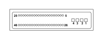

M051 Braking system control unit (FRONT)
- Path
- Electrical equipment > 3 CONNECTORS > M INTERMITTENT AND TIMED ELECTRONIC DEVICES > M051 Braking system control unit > M051 Braking system control unit (FRONT)
- Kind
- connector pinout (pin -> wire colour -> other end)
- Applies to
- engines: 1.2 8v; all production periods; only with equipment: Smart gearbox
- Interactive page
- https://sloeber94.github.io/elrnDB-fPnd/en/#/169003445
Applies to: engines: 1.2 8v; all production periods; only with equipment: Smart gearbox

Wiring | Colour |
|---|---|
- |
Pin | Cable | Destination | |||
|---|---|---|---|---|---|
Sec.. | Colour | Node | Connect. | Pin | |
1 | 4 | N (black) | X | 4 | |
1 | |||||
2 | 4 | R (red) | X | 46 | |
3 | |||||
3 | 2,5 | R (red) | X | 46 | |
2 | |||||
4 | 2,5 | N (black) | X | 1 | |
1 | |||||
5 | 0,5 | BN (white with black stripe) | 1 | ||
6 | 0,5 | HM (grey with brown stripe) | 2 | ||
8 | 0,5 | MB (brown with white stripe) | 2 | ||
9 | 0,5 | MG (brown with yellow stripe) | 2 | ||
10 | 0,5 | BG (white with yellow stripe) | 1 | ||
11 | 0,5 | BL (white with blue stripe) | 4 | ||
14 | 0,5 | M (brown) | 3 | ||
15 | 0,5 | N (black) | 6 | ||
16 | 0,5 | A (light blue) | 4 | ||
17 | 0,5 | AN (light blue with black stripe) | 2 | ||
18 | 0,5 | H (grey) | 1 | ||
19 | 0,5 | VB (green with white stripe) | 3 | ||
20 | 0,5 | LN (blue with black stripe) | 5 | ||
21 | 0,5 | CL (orange with blue stripe) | 1 | ||
25 | 0,5 | M (brown) | 8 | ||
26 | 0,5 | MN (brown with black stripe) | 2 | ||
27 | 0,5 | B (white) | 1 | ||
28 | 0,75 | BL (white with blue stripe) | 14 | ||
29 | 0,5 | BR (white with red stripe) | 1 | ||
30 | 0,5 | ZB (violet with white stripe) | 4 | ||
31 | 0,5 | CB (orange with white stripe) | 2 | ||
33 | 0,5 | HB (grey with white stripe) | 18 | ||
35 | 0,5 | V (green) | 3 | ||
37 | 0,5 | C (orange) | 2 | ||
41 | 0,5 | LG (blue with yellow stripe) | 7 | ||
45 | 0,5 | V (green) | 7 | ||
46 | 0,5 | NZ (black with violet stripe) | 3 | ||
Topics linked from this page (16)
- 12 FRONT
- B001D JUNCTION UNIT (FRONT)
- C012 ABS FRONT EARTH
- D001 FRONT/DASHBOARD COUPLING
- D097C SHORT CIRCUITING COUPLING (FRONT)
- D097G SHORT CIRCUITING COUPLING (FRONT)
- D097H SHORT CIRCUITING COUPLING (FRONT)
- K013 LONGITUDINAL ACCELERATION SENSOR
- K070 LEFT FRONT WHEEL SENSOR FOR ABS
- K071 RIGHT FRONT WHEEL SENSOR FOR ABS
- K074 SLEWING SENSOR (VDC)
- K075 LEFT REAR WHEEL SENSOR FOR ABS
- K076 RIGHT REAR WHEEL SENSOR FOR ABS
- M001D BODY COMPUTER (FRONT)
- M051 Braking system control unit
- M086B ELECTRIC STEERING CONTROL UNIT (FRONT)